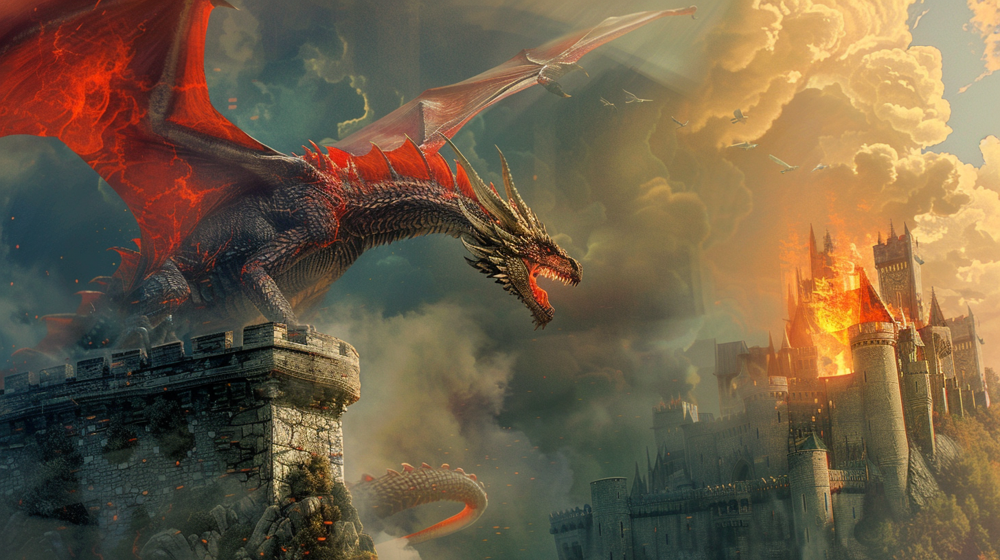

Seige of the Great Wall
In the shadow of the ancient stone walls of Draachenmar, a fierce battle unfolded. The malevolent Cult of Dragons, fueled by dark magic, sought to breach the kingdom of Gulanbarak. Their scaled minions clashed with the stout Dwarves and their steadfast allies—the valiant warriors of the realm.
Amidst fire and fury, the Dwarves defended their homeland with unwavering resolve. Axes clashed, spells crackled, and the very earth trembled. The skies roared as the winged dragons descended, but the Dwarves stood firm, their forges burning hot with determination.
In the final clash, the sun broke through the smoke, illuminating the fallen bodies of cultists and dragons alike. The Dwarves emerged victorious, their hammers ringing in triumph. The walls of Draachenmar stood unyielding, and the evil cult was shattered.
The kingdom of Gulanbarak celebrated, but the scars of battle would forever mark the stones. Legends would tell of the day when Dwarves and allies turned the tide against darkness—a testament to courage, unity, and the indomitable spirit of Draachenmar